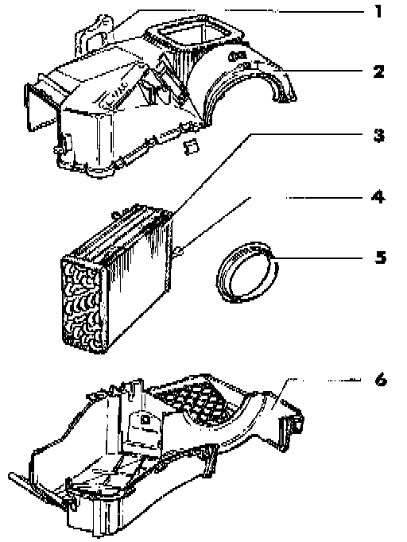

Evaporator Core: Service and Repair

NOTE: Part numbers are for reference only. Always check with a VW Parts Department for latest parts information.
To remove evaporator housing for disassembly:
- Discharge A/C refrigerant system. Service and Repair
- Drain engine coolant.
- Remove instrument panel and support bracket. Service and Repair
- Remove heater box/evaporator housing. Service and Repair
1 - Seal
2 - Upper evaporator housing
- Seal grooves and contact surfaces with silicone sealant, Part No. AKD 476 KD5 05, or equivalent
3 - Evaporator
4 - Funnel
- To guide sensor tube for A/C evaporator temperature switch -E33-
5 - Air intake ring
6 - Lower evaporator housing
- Seal grooves and contact surfaces with silicone, sealant Part No. AKD 476 KD5 05, or equivalent